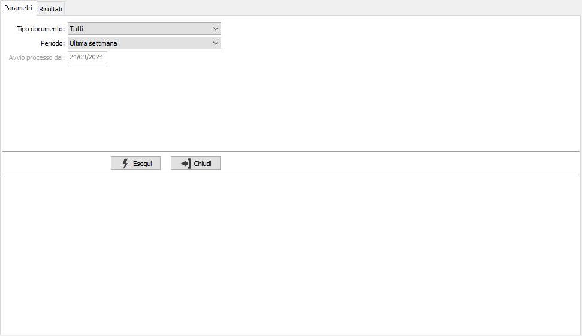
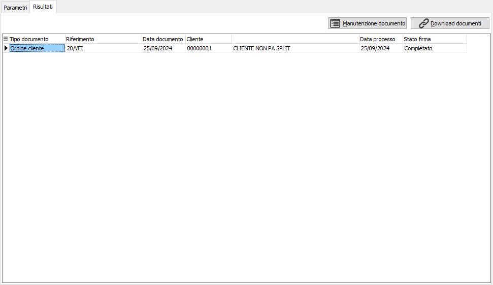
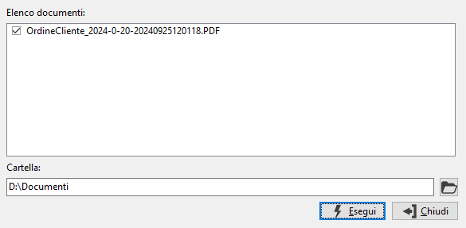

Analisi documenti firmati
Il programma effettua la visualizzazione dei processi di firma per tipo documento e data.
Il programma si articola su due finestre video. La prima, Parametri, consente la definizione dei parametri di analisi; è possibile scegliere un singolo tipo di documento o tutti i documenti ed un periodo corrispondente alla data di inizio ricerca dei processi di firma.

Confermando tramite pressione del bottone Esegui, viene avviata la selezione, effettuato l'aggiornamento dello stato di firma dei documenti selezionati e richiamata la finestra video Risultati.

La finestra video riporta i documenti ed il relativo stato aggiornato; tramite il pulsante Manutenzione documento è possibile accede al documento, tramite il pulsante Download documenti è possibile, solo per i documenti che hanno lo stato firma "Completato" effettuare il download dei documenti firmati. Entrambe le funzionalità sono disponibili tramite un menù contestuale sulla griglia che si apre con il tasto destro del mouse; il download è disponibile anche con il doppio clic sul rigo del documento che abbia lo stato "Completato".

La finestra di download mostra l'elenco dei documenti compresi nel processo di firma e consente di selezionarli apponendo la spunta alla casella a sinistra; è necessario specificare una cartella di destinazione su cui i documenti saranno salvati. Il pulsante a destra del campo Cartella consente di utilizzare la selezione trami esplora risorse.
La pressione del pulsante Esegui avvia il download ed al termine viene chiesto se si vuole visualizzare il documento scaricato, se solo uno, oppure l'ultimo documento scaricato se più di uno.